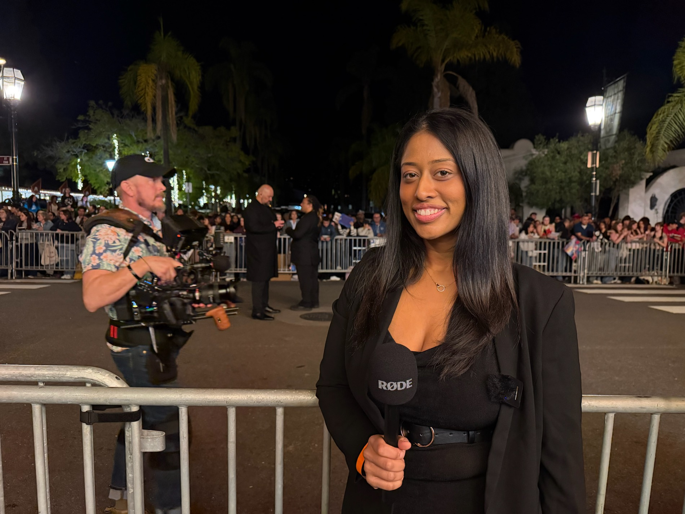
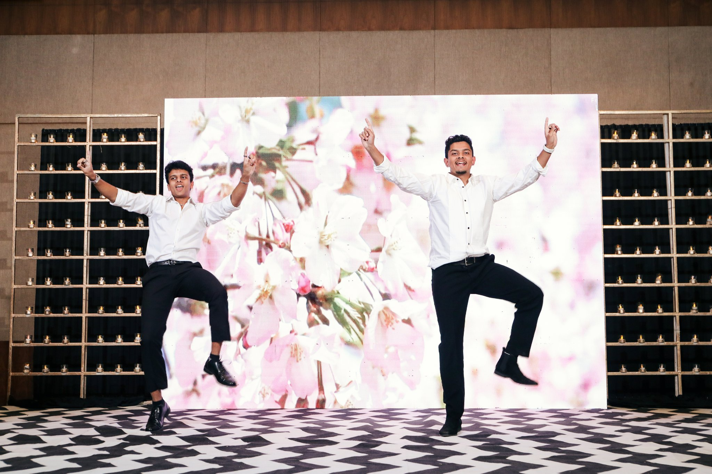
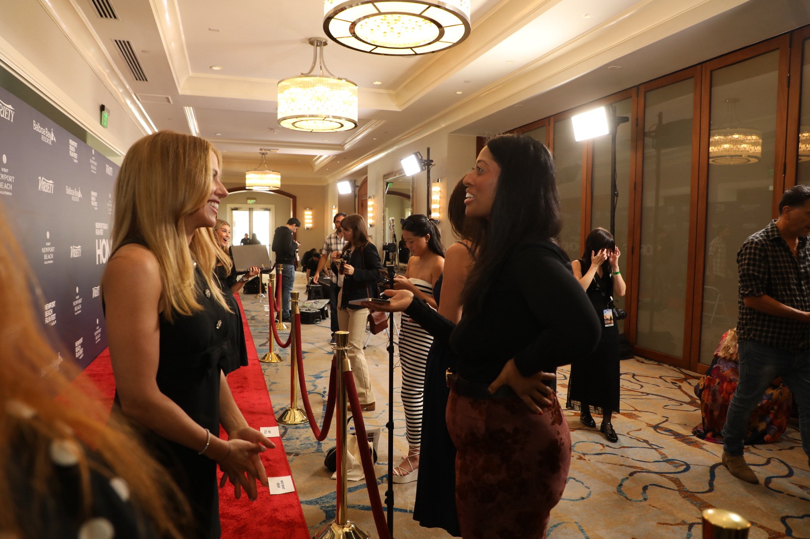

Photo and video
Cover member events, performances, interviews, and behind-the-scenes moments.
Visuals · Ashwin Suresh, Charlie Hooper, Sidd Chauhan, and specialists
Choose event photography, performance video, interviews, behind-the-scenes coverage, livestreaming, and short social clips.
Plan event coverage
Available coverage
Cover member events, performances, interviews, and behind-the-scenes moments.
Plan camera coverage and live switching around the venue and run of show.
Create short event clips for club communications and post-event recaps.
Live-event examples
These examples show a stage performance and a live red-carpet interview.


Plan the deliverables